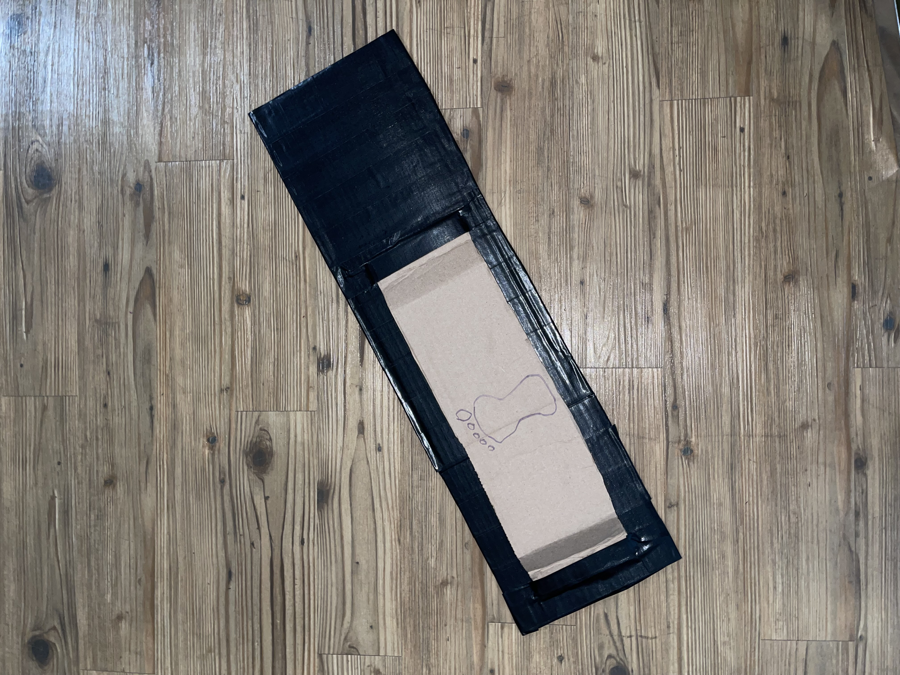

Footle
CTRL-ALT-ELITE | Team 11 - Quinn Armstrong, Shion Ito, Brandon Pham, Grant Tugwell

Project Scope and Motivation
Once upon a time, or really not that long ago, there are lots of diseases and germs being spread. Doors handles are one of the top ways these are spread. We intend to design a system that can be implemented on doors which allows for the same utilities as current push-latch doors, but gets rid of the need to touch a nasty door handle each time.

Technical Challenges
Issues that we might run into when the product goes into full production.
Adding to exisiting Doors can be a challenge becuase now the door has two inputs for the door latch/lock. Making design more intuitive is necessary as some people may not know what to do when seeing the footle.Finding best placement height can be a challenge as everyone's height differs and they all have different preferences on where to kick the door.Optimal force required is important because everyone has different leg strength to open the door. Sturdier/Stronger design is essential because the device is going to be kicked often which can take a lot of damage.
Interaction Scenarios
The interaction scenarios are our intedned use cases of the Footle.
Regular every day door usage
Brandon has a classroom on the 3rd story of HRBB. Everyday he walks through the buliding entrance by kicking the footle and unlocking the door latch.
{kind=link}
{kind=link}
Use while moving in
Shion was moving into his apartment after an extremely long drive. On top of having the single handidly bring each box up, he didn't want to have to put the box down each time, open the door, then bend back over. Now, with the footle, he doesn't have to do that additional action each time he wants to open the door.
{kind=link}
{kind=link}
Use with dirty handle
Quinn came back from a long day at school, when he noticed that the door handle he was about to grab, had some weird substance on it. Instead of touching this nasty door handle, he simply opted to use the footle.
{kind=link}
{kind=link}
Use while hands are dirty
Grant has just finished with his Intro to Mud and Earth 101 final. His hands are incredibly dirty and convered with Mud. Grant conviently uses the Footle to open his appartment door rather than using his hands and creating a mess.
{kind=link}
{kind=link}
Use while sick
Dr. Kim has COVID, so just to be safe instead of opening the door with her hands so she doesn't accidently spread COVID, she decides to use the Footle.
{kind=link}
Use After Washing Hands
Christian just finished washing his hands after going to the bathroom but would like to open his apartment door without getting his hands dirty again so he opts to use the Footle.
{kind=link}
{kind=link}
Door handle is extremely cold due to weather
Raymond just came back from work, and would like to enter back into his apartment. However, the door handle is too cold to open so he decided to use the Footle and keep his hands warm.
{kind=link}
{kind=link}
Use Footle with toe/front of foot
Navatej is a professional soccer player and prefers to use his feet, specifically the front of his foot. Because of this, whenever he opens the door using the Footle he opts to use his toes to push instead of the bottom of his foot.
{kind=link}
Use Footle with side of foot.
James is a Rugby fanatic and loves to use his bodyweight every opportunity he can. James opens the door by leaning and pushing against the footle with the side of his foot.
{kind=link}
Use both Footle and side of body
Camille loves to multitask, and often when she is going about her day, she has learned the habit of using her body to open the door. Instead of turning the door handle, and then leaning into it, Camille can now use the footle and her body to open the door.
{kind=link}
Impact Statement
When we install the footle we want to see a certain number of interactions. We hope to see at least 10% of people use it. We want to keep this number low and realistic, as we will be supplementing the door handle.
Milestones
Here is what we accomplished and will accomplish. (Starting Post-Midterm presentation)
- Week 1 - Designing Website Template and Brainstorming
- For the first week, we mainly focused on strengthening the core foundation of the Footle from our Midterm Project. We especially tackled technical and structural aspects that were not really mentioned during the Midterm presentation such as the material and height placement. Furthermore, we made a base template of the website that would be hosting our advertisement and act as our documentation of our whole design process.
- Week 2 - Professor Feedback and Planning Phase.
- For week 2, we mainly focused on going over the feedback we received from the professor on our initial design and website. One of the main concerns she brought up was the lack of technical aspects within our project as well as a storyline that could really help sell the product. She suggested developing some sort of story that would articulate the reasoning why the Footle is necessary. To tackle the technical aspect, we realized that having a sensor that could track the number of users who would be utilizing the Footle would be beneficial for data collection. Finally, we created milestones for our website to act as a plan of action that would highlight the big goals we tried to accomplish for our project.
- Week 3 - Learn and Design 3D model of the Footle.
- After planning out our goals and designs, we got to the prototyping face through 3D models of the Footle. This was not as difficult for us since we already had a cardboard prototype that we had developed in our midterm project. We used SketchUp, a 3D modeling tool, to all individually design a mock use case scenario with the Footle in action. These use cases included: gardeners with their hands full of tools, a new tenant moving into their apartment, a user calling someone with a cell phone, and a teacher who is trying to not spread germs. These 3D modeling of the use cases gave us great inspiration and insights into Footle’s use cases and ultimately was decided to be used in our video demo.
- Week 4 - Make a working prototype and Recording our video.
-
When looking into making a working prototype, we had a few things that were very important to consider. The main consideration we had to make
was durability. The footle is by nature a product that gets kicked. While most users are likely to use it with an acceptable amount of force, something
we have to make considerations for are the users that are absolutely going to slam the footle. This means that our prototype has to be able to take a beating
and still be able to work. With that in mind, we started thinking about what materials we could use for this. Our first thoughts were to use something like
wood, however we then found a few problems with that. First of all, as a prototype, we cannot permanently affix anything to our doors. There are not many adheasives
that will allow us to affix a protoype wooden footle to our door, and can easily be removed. We then thought our ultimate material would
be to use something like aluminum, however for a prototype that is expensive and hard for us to work with since we do not have a materials
shop readily avaliable to us.
We ultimately decided to stick with a cardboard frame, and then double wrap the footle with duct tape. This gave us the rigidity necessary for the footle to maintain shape, as well as still being ductile enough to actually take a beating and maintain its shape. Moving forward, we would want to make our prototype out of a light weight, yet durable material like aluminum, however in the limited amount of time we had, our protype worked well.
When making our video, we wanted to be sure to highlight some of our user stories we had experience with. This mainly had to do with our inspirations for a product like the footle; door handles are dirty, and our hands our often full. We were able to highlight most use cases where it was more work for a typical users to open the door with their hands than their feet.
- Week 5 - Update our website with our case study images.
-
Finally, to finish up our 436 final project, we needed to finish our website and update all of our observations of our real life use cases.
This means including our final video that we worked really hard on, as well as explaining our reasoning for our prototyping choices.
We also wanted to point out our team member attributions:- Quinn Armstrong: Website design; acting; assemble footle; Script writer; 3D design
- Brandon Pham: assisted with Website design; acting; design footle; video intro editing; assisted 3D design
- Shion Ito: Website design; acting; helped assemble and design footle
- Grant Tugwell: Video editing; acting; assisted with website design; helped assemble and design footle